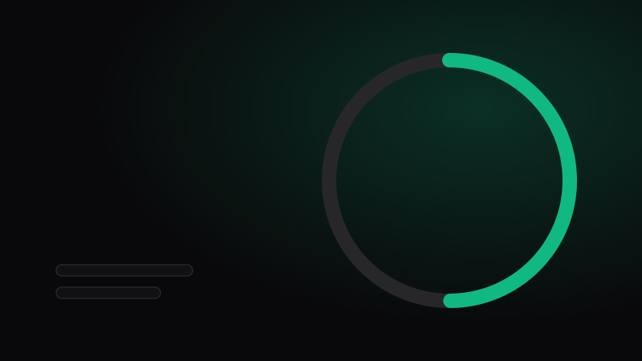

Activity Library
Browse 20 ready-made activities across wellness, focus, fitness, mindset, and learning — add any of them in one click.

Browse 20 ready-made activities across wellness, focus, fitness, mindset, and learning — add any of them in one click.
Start a built-in countdown for any timed activity so you know exactly when a session is done.
Set your country and preferred language from the Tracker page, and the interface adjusts to match.
Everything you add is saved to this browser, so your list is right where you left it next time.